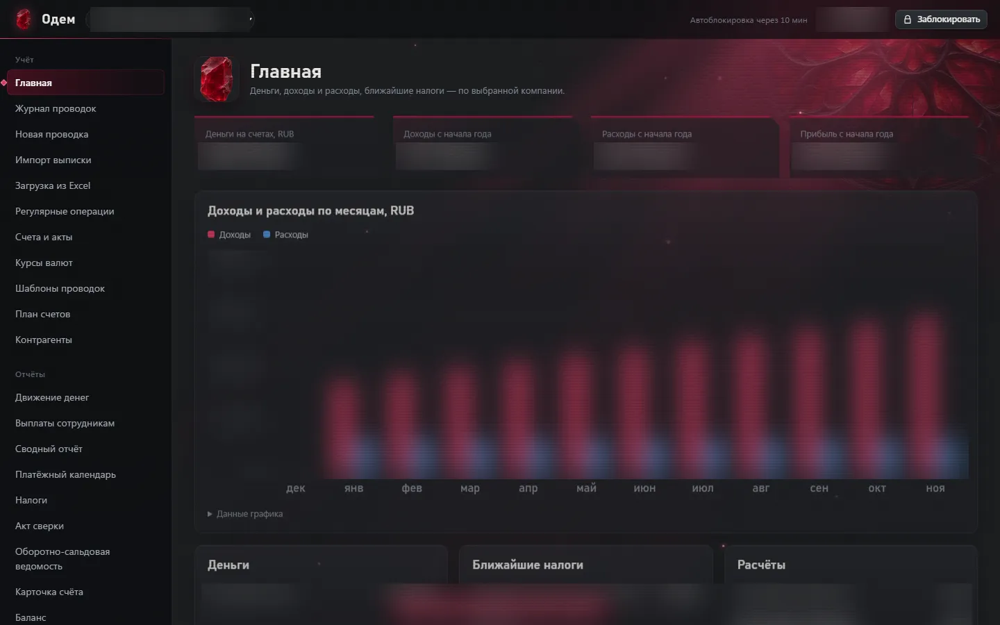

Data hiddenStones
Each stone is closed software that protects your data
What they share: offline, no cloud, the stones send nothing out on their own. What differs is the job and the colour.
 Data hidden
Data hidden
Released · version 1.2.1
Adamant
A security check for your Windows PC and your own network. Sends nothing to the internet on its own.
Topaz
Legal edition. In development.
Carbuncle
For notaries. In development.